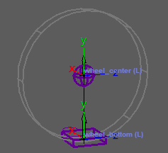

A vehicle wheel/tire.
Guides:
- 'Wheel Bottom Guide' - Position this guide on the ground
at the bottom of the wheel.
- 'Wheel Center Guide' - Position this guide
at the center of the wheel on the axis around which the wheel rotates. The distance between these
two guides represents the wheel radius.
A helper cylinder shape is drawn to help visualize the wheel.

Attributes:
- 'Ctrls Scale' - Scale all the node ctrls. Note that
the attachments 'Ctrls
Settings' and 'CtrlsShape' will override this. [Video]
- 'Expose RotateOrder' - Exposes all the
ctrls 'RotateOrder' attribute in the Channel Box. [Video]
- 'Secondary
Ctrls' - Secondary ctrls are added under some ctrls to help prevent gimbal
lock.
A visibility attribute is added to the parent
ctrl. [Video]
- 'Auto
Roll' - Using an expression and graph nodes to enable automatic
rotation of the wheel based on the distance traveled. For more information, please refer to the
detailed explanation below.
Connections:
- 'Input' - Drives the entire node.
- 'Output' - An output located at
the 'center_jnt'.
Auto Roll Notes:
To achieve accurate wheel rotation, a simulation of the entire timeline needs to be played from start
to end. This simulation is faked using nodes and an expression. The nodes calculate the wheel rotation
based on the distance traveled from the previous frame, while the expression calculates the rotation on
a frame change.
However, this approach may result in a few issues:
- When animating, the wheel rotation may appear to behave incorrectly. This is because the rotation
is calculated based on the wheel's position in the previous frame, rather than being updated in
real-time. To address this, playing the entire frame range after animating will resolve the
perceived incorrect behavior.
- Similar issues may occur when jumping between frames, where the wheel rotation does not calculate
the skipped frames. Again, playing the full frame range will ensure the rotation is accurately
calculated.
- It is advisable to bake the wheel joints before rendering, particularly when using a render farm.
This ensures consistent and accurate wheel rotation during the rendering process.
_____________________________________________
Get Arise at: https://www.ariserigging.com